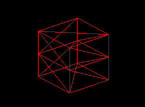
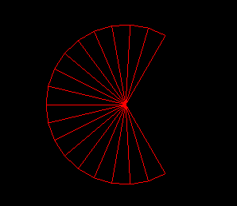
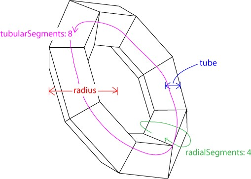

Three.js入门-1
基本知识
Three.js中一个程序至少包括：
- Renderer（渲染器）
- Scene（场景）
- Camera（照相机）
- Object（物体），一般默认场景中的物体是要有的，其实是可以没有的。
Renderer（渲染器）
将和Canvas元素进行绑定，若之前在HTML定义了Canvas元素，则Renderer可以这样创建：1
2
3var renderer = new THREE.WebGLRenderer({
canvas: document.querySelector('#canvasid');
})
也可以不先定义Canvas元素，而通过Three.js生成Canvas元素,：1
2
3var renderer = new THREE.WebGLRenderer();
renderer.setSize(400, 300); // 设定宽高
document.querySelector('body').appendChild(renderer.domElement); // 将Canvas添加到body内
可以通过renderer设置背景色（其实是清除画面内的颜色，重置为指定颜色）,颜色为十六进制：1
renderer.setClearColor(0x000000);
Scene（场景）
在Three.js中，场景就是一个大容器，需要在最开始的时候实例化，本身没有什么复杂操作，物体都需要添加到场景中，1
var scene = new THREE.Scene();
Camera（照相机）
先了解下整个Three.js的坐标系,其符合右手坐标系,如下,：
由于场景是三维的，而我们的显示屏只有二维，所以需要有一个方式将三维空间内的场景映射到二维空间内，照相机就是这样一个抽象的过程，定义三维空间到二维屏幕的投影方式。简单来说，其实就是如照相机做的那样，将现实中的场景（三维）拍照定格为一个照片（二维）。
而根据投影方式的不同，照相机分为正交投影照相机、透视投影照相机两种，其区别如下：
- 正交投影照相机,Orthographic Camera,投影的结果就如同初高中数学老师教我们画的立体图，能直接看出平行、等长等情况，不存在透视（近大远小）。比如工程图、线路图等，不会由于视角问题而改变物体比例。如下图(a)
- 透视投影照相机投影的结果就如同真实世界的照片的结果，近大远小，更类似人眼的效果。如下图(b)

Orthographic Camera（正交投影照相机）
正交投影照相机可以看作是一个长方体，默认情况下完全对应到整个三维空间的长方体，构造函数为THREE.OrthographicCamera(left, right, top, bottom, near, far)
六个参数含义分别代表了六个面，左、右、上、下、近、远，六个面闭合而成的空间称为视景体（Frustum）。其中近、远两个面可以认为照相机是在三维空间的外部，所以有近、远两个面的区别。而下图内的灰色立方体就是整个三维空间：
其中参数的设置是有“技巧”的，而不是随意设置的，为了保持照相机与整个三维空间的横竖比例，需要保证照相机平面与Canvas宽高比一致。即(right - left) / (top - bottom) == canvas.width / canvas.height
near和far值可以认为是照相机位置在Z轴上的位置（可以简单类比CSS中的z-index属性），而照相机是不能拍摄到被遮挡的物体的，所以为了保证场景中的物体不会因为太近或太远而被照相机忽略，一般near设置较小（如1），far设置较大（如100，1000等），具体如何设置则可以考虑场景中物体位置而定。
示例如下：
See the Pen Three.js - Orthographic Camera by XmoyKing (@xmoyking) on CodePen.
上述代码中，需要解释如下：
- 上述的单位是一个抽象值，并不指px或pt等实际大小
- 照相机的位置设置为(0,0,5),默认朝向z轴负方向，一般通过lookAt函数指定一个方向
- 在原点处创建的正方体边长为1，颜色为红色，为了对比，将wireframe属性开启，其不是实心的材质，可以看到立方体后的边
- 由于正交投影的投影方向，结果为一个正方形，后面的边与前面的边完全重合了
由于Canvas宽高比为4/3，与照相机水平距离/垂直距离比例相同（(left - right) / (top - bottom)），所以最后物体的投影结果长宽比例保持不变，若将照相机水平距离减小为2，即new THREE.OrthographicCamera(-1, 1, 1.5, -1.5, 1, 10),则投影结果为物体水平方向会被拉长（因为摄像机变窄了）。
若移动照相机的位置，即camera.position.set(1, 0, 5);向右（x轴正方向）移动1单位，结果好像物体向左移动了（x轴负方向）。
当然也可以直接通过设置照相机的left和right平面值达到效果，如改为(-1, 3, 1.5, -1.5, 1, 10)，即向右移动视景体，所以left和right不是必须为相反数的。
可以转换其他视角观察物体，比如仰视正方体：
- 将照相机位置设置在立方体的斜下方，如(4, -3, 5)处
- 通过lookAt函数指定照相机的观察点,
camera.lookAt(new THREE.Vector3(0, 0, 0));, 其中的“观察点”是以向量（从原点到某个点的距离和方向）的形式定义
Perspective Camera（透视投影照相机）
其可看作是一个立体锥，构造函数为THREE.PerspectiveCamera(fov, aspect, near, far),如下图：
其中，灰色部分立方体为视景体，表示可能被渲染的物体所在的区域，
- fov是视景体在竖直方向上的角度（非弧度值），
- aspect表示照相机水平方向和竖直方向上的比值，一般等于Canvas的纵横比，即
canvas.width / canvas.height。 - near和far分别表示照相机到视景体最近和最远的距离，均为正值，且far应大于near。
示例如下：
See the Pen Three.js - Perspective Camera by XmoyKing (@xmoyking) on CodePen.
当改变fov，如从45增大到60，则结果会发现，立方体好像变小了。将照相机的竖直张角增大会导致视景体变大，其实正方体的实际大小没改变，导致立方体相对视景体变小了，所以看起来变小了，如下图：
而改变aspect会改变纵横比，结果类似正交投影照相机。
Object（物体）
在Three.js中创建物体时，需要传入两个参数：
- Geometry（几何形状），其主要是存储了物体的顶点信息，Three.js封装了WebGL，所以不需要手动指定每个顶点的位置，可以通过一些特征如半径、长宽高来创建几何形状。
- material（材质）
Geometry（几何形状）
包括常用的立方体、平面、球体、圆柱体、四面体、八面体、三维文字、自定义几何形状等。
基本几何形状 - 立方体
构造函数为THREE.CubeGeometry(width, height, depth, widthSegments, heightSegments, depthSegments)
- width是x方向上的长度
- height是y方向上的长度
- depth是z方向上的长度
- 后三个参数分别是在三个方向上的分段数，如widthSegments为3的话，代表x方向上水平分为三份。一般情况下不需要分段的话，可以不设置后三个参数，后三个参数的缺省值为1。其他几何形状中的分段也是类似的
- 物体的默认位置是原点，对于立方体而言，是其几何中心在原点的位置
设置分段后,例如THREE.CubeGeometry(1, 1, 1, 1, 2, 1),（将高上分为2段）效果如下：

基本几何形状 - 平面
构造函数为THREE.PlaneGeometry(width, height, widthSegments, heightSegments)
- width是x方向上的长度
- height是y方向上的长度
- 后两个参数同样表示分段
- 平面其实是一个长方形，而不是数学意义上无限大小的平面
- 创建的平面在x轴和y轴所在平面内,如果需要创建的平面在x轴和z轴所在的平面内，可以通过物体的旋转来实现
基本几何形状 - 球体
构造函数为THREE.SphereGeometry(radius, segmentsWidth, segmentsHeight, phiStart, phiLength, thetaStart, thetaLength)
- radius是半径
- segmentsWidth表示经度上的切片数
- segmentsHeight表示纬度上的切片数
- phiStart表示经度开始的弧度,如
Math.PI / 6 - phiLength表示经度跨过的弧度
- thetaStart表示纬度开始的弧度
- thetaLength表示纬度跨过的弧度
- 在图形底层的实现中，并没有曲线的概念，曲线都是由多个折线近似构成的。对于球体而言，当segmentsWidth, segmentsHeight这两个值较大的时候，形成的多面体就可以近似看做是球体了。
基本几何形状 - 圆形
构造函数为THREE.CircleGeometry(radius, segments, thetaStart, thetaLength),四个参数都于球体中类似
new THREE.CircleGeometry(1, 18, Math.PI / 3, Math.PI / 3 * 4)可以创建一个在x轴和y轴所在平面的三分之二圆的扇形：

基本几何形状 - 圆柱体
构造函数为THREE.CylinderGeometry(radiusTop, radiusBottom, height, radiusSegments, heightSegments, openEnded)
- radiusTop与radiusBottom分别是顶面和底面的半径
- height是圆柱体的高度
- radiusSegments与heightSegments可类比球体中的分段
- openEnded是一个布尔值，表示是否没有顶面和底面，缺省值为false，表示有顶面和底面, 若设置为true将创建一个没有顶面与底面的圆柱体
基本几何形状 - 正四面体、正八面体、正二十面体
正四面体（TetrahedronGeometry）、正八面体（OctahedronGeometry）、正二十面体（IcosahedronGeometry）的构造函数较为类似，分别为：1
2
3THREE.TetrahedronGeometry(radius, detail)
THREE.OctahedronGeometry(radius, detail)
THREE.IcosahedronGeometry(radius, detail)
radius是半径；detail是细节层次（Level of Detail）的层数，对于大面片数模型，可以控制在视角靠近物体时，显示面片数多的精细模型，而在离物体较远时，显示面片数较少的粗略模型。
基本几何形状 - 圆环面
构造函数为THREE.TorusGeometry(radius, tube, radialSegments, tubularSegments, arc)
- radius是圆环半径
- tube是管道半径
- radialSegments与tubularSegments分别是两个分段数，详见下图
- arc是圆环面的弧度，缺省值为Math.PI * 2

基本几何形状 - 圆环结
构造函数为THREE.TorusKnotGeometry(radius, tube, radialSegments, tubularSegments, p, q, heightScale),样子像打了节的圆环，前四个参数在圆环面中已经有所介绍，p和q是控制其样式的参数，一般可以缺省，heightScale是在z轴方向上的缩放。如果需要详细了解，自行搜索圆环结。
三维文字
文字形状（TextGeometry）可以用来创建三维的文字形状，使用文字形状需要下载和引用额外的字体库，具体参见Three.js GitHub说明。
构造函数为THREE.TextGeometry(text, parameters),text是文字字符串，parameters是以下参数组成的对象：
- size：字号大小，一般为大写字母的高度
- height：文字的厚度
- curveSegments：弧线分段数，使得文字的曲线更加光滑
- font：字体，默认是’helvetiker’，需对应引用的字体文件
- weight：值为’normal’或’bold’，表示是否加粗
- style：值为’normal’或’italics’，表示是否斜体
- bevelEnabled：布尔值，是否使用倒角，意为在边缘处斜切
- bevelThickness：倒角厚度
- bevelSize：倒角宽度
具体使用流程为：
- 下载字体json文件，在Three.js GitHub master/examples/fonts目录下，可以找到一些示例字体，例如helvetiker字体
- 用THREE.FontLoader加载字体文件
- 通过TextGeometry创建文字形状
- 加载到mesh中
代码如下：1
2
3
4
5
6
7
8
9
10
11
12var loader = new THREE.FontLoader();
loader.load('../lib/helvetiker_regular.typeface.json', function(font) {
var mesh = new THREE.Mesh(new THREE.TextGeometry('Hello', {
font: font,
size: 1,
height: 1
}), material);
scene.add(mesh);
// render
renderer.render(scene, camera);
});
自定义形状
由于自定义形状需要手动指定每个顶点位置，以及顶点连接情况，如果该形状非常复杂，程序员的计算量就会比较大。在这种情况下，建议在3ds Max之类的建模软件中创建模型，然后使用Three.js导入到场景中，这样会更高效方便。
自定义形状使用的是Geometry类，它是其他如CubeGeometry、SphereGeometry等几何形状的父类，其构造函数是THREE.Geometry(),然后通过将顶点加入到实例的vertices数组中即可。1
2
3
4
5
6
7
8
9
10
11
12
13
14
15
16
17
18
19
20
21
22
23
24
25
26
27
28
29
30
31// 初始化几何形状
var geometry = new THREE.Geometry();
// 设置顶点位置
// 顶部4顶点
geometry.vertices.push(new THREE.Vector3(-1, 2, -1));
geometry.vertices.push(new THREE.Vector3(1, 2, -1));
geometry.vertices.push(new THREE.Vector3(1, 2, 1));
geometry.vertices.push(new THREE.Vector3(-1, 2, 1));
// 底部4顶点
geometry.vertices.push(new THREE.Vector3(-2, 0, -2));
geometry.vertices.push(new THREE.Vector3(2, 0, -2));
geometry.vertices.push(new THREE.Vector3(2, 0, 2));
geometry.vertices.push(new THREE.Vector3(-2, 0, 2));
// 设置顶点连接情况
// 顶面
geometry.faces.push(new THREE.Face3(0, 1, 3));
geometry.faces.push(new THREE.Face3(1, 2, 3));
// 底面
geometry.faces.push(new THREE.Face3(4, 5, 6));
geometry.faces.push(new THREE.Face3(5, 6, 7));
// 四个侧面
geometry.faces.push(new THREE.Face3(1, 5, 6));
geometry.faces.push(new THREE.Face3(6, 2, 1));
geometry.faces.push(new THREE.Face3(2, 6, 7));
geometry.faces.push(new THREE.Face3(7, 3, 2));
geometry.faces.push(new THREE.Face3(3, 7, 0));
geometry.faces.push(new THREE.Face3(7, 4, 0));
geometry.faces.push(new THREE.Face3(0, 4, 5));
geometry.faces.push(new THREE.Face3(0, 5, 1));
其中new THREE.Face3(0, 1, 3)创建一个三个顶点组成的面片（三个点即可确定一个面），追加到geometry.faces数组中。三个参数分别是四个顶点在geometry.vertices中的序号。
结果如下：
See the Pen Three.js - Custom Geometry by XmoyKing (@xmoyking) on CodePen.
Material（材质）
材质（Material）是独立于物体顶点信息之外的与渲染效果相关的属性。通过设置材质可以改变物体的颜色、纹理贴图、光照模式等。具体可以分为：
- 基本材质
- 两种基于光照模型的材质
- 使用法向量作为材质
- 使用图像作为材质
基本材质
使用基本材质（BasicMaterial）的物体，渲染后物体的颜色始终为该材质的颜色，而不会由于光照产生明暗、阴影效果。如果没有指定材质的颜色，则颜色是随机的。其构造函数是THREE.MeshBasicMaterial(opt),其中参数opt为一个对象，包含如下参数：
- visible：是否可见，默认为true
- side：渲染面片正面或是反面，默认为正面THREE.FrontSide，可设置为反面THREE.BackSide，或双面THREE.DoubleSide
- wireframe：是否渲染线而非面，默认为false
- color：十六进制RGB颜色，如红色表示为0xff0000
- map：使用纹理贴图
简单使用如下：1
2
3
4new THREE.MeshBasicMaterial({
color: 0xffff00,
opacity: 0.75
});
对于基本材质，即使改变场景中的光源，使用该材质的物体也始终为颜色处处相同的效果。这并不符合真实的情况，因此，常用的是Lambert光照模型材质以及Phong光照模型材质。
基于Lambert光照模型的材质
MeshLambertMaterial（一般称为Lambert材质）是指符合Lambert光照模型的材质。
Lambert光照模型的主要特点是只考虑漫反射而不考虑镜面反射的效果，因而对于金属、镜子等需要镜面反射效果的物体就不适用，但对于其他大部分物体的漫反射效果都是适用的。
其构造函数是THREE.MeshLambertMaterial(opt)，其配置参数如下：
- color是用来表现材质对散射光的反射能力，也是最常用来设置材质颜色的属性。除此之外，还可以用ambient和emissive控制材质的颜色。
- ambient表示对环境光的反射能力，只有当设置了AmbientLight后，该值才是有效的，材质对环境光的反射能力与环境光强相乘后得到材质实际表现的颜色。
- emissive是材质的自发光颜色，可以用来表现光源的颜色。
See the Pen Three.js - LambertMaterial by XmoyKing (@xmoyking) on CodePen.
必须添加一个点光源用于测试LambertMaterial,若不添加光源，则无法看到物体，因为物体的颜色是基于光照模型的，类比现实就是没有任何光源的情况下，在漆黑一片的屋里人眼应该是看不到任何东西的。
当取消光源，而材质添加emissive自发光颜色则效果与基本材质一样。
基于Phong光照模型的材质
MeshPhongMaterial（Phong材质）与Lambert材质不同，Phong模型考虑了镜面反射的效果，因此对于金属、镜面的表现尤为适合。而漫反射部分与Lambert材质相同。
其构造函数是THREE.MeshPhongMaterial(opt)，其配置参数如下：
- 可以指定color、emissive、ambient值，同Lambert材质效果
- specular值指定镜面反射系数
- shininess属性控制光照模型中的高光指数，越大则高光光斑越小，默认值为30
See the Pen Three.js - PhongMaterial by XmoyKing (@xmoyking) on CodePen.
法向材质
法向材质可以将材质的颜色设置为其法向量的方向，有时候对于调试很有帮助。法向材质的设定很简单，甚至不用设置任何参数：new THREE.MeshNormalMaterial()
材质的颜色与照相机与该物体的角度相关，改变照相机位置，观察不同角度的颜色变化。在调试时，要知道物体的法向量，使用法向材质就很有效。
See the Pen Three.js - NormalMaterial by XmoyKing (@xmoyking) on CodePen.
材质的纹理贴图
大多数情况下材质都不会仅仅是单色的，而是多种多样的，这时就需要导入图像作为纹理贴图，并添加到相应的材质中。
注意：资源跨域问题，在本地测试时可以引用网络资源。
官方示例修改如下，即可实现多张图片应用到一个立方体内：1
2
3
4
5
6
7
8
9var materials = [];
for (var i = 0; i < 6; ++i) {
materials.push(new THREE.MeshBasicMaterial({
map: new THREE.TextureLoader().load('https://raw.githubusercontent.com/Ovilia/ThreeExample.js/master/img/' + i + '.png'), // 引用网络资源
overdraw: true
}));
}
var geometry = new THREE.CubeGeometry(200,200,200);
var material = new THREE.MeshFaceMaterial(materials); // 此MeshFaceMaterial在官方文档内未找到，猜测应该是已经废弃了，或转为内部方法
很多情况下不会用一整张图片作为一个面，而是仅仅使用一小部分的切图，然后重复，如CSS中的background-repeat属性，以如下图片为例
1
2texture.wrapS = texture.wrapT = THREE.RepeatWrapping; // 指定重复方向为两个方向
texture.repeat.set(4, 4); // 设置重复次数都为4
参考：